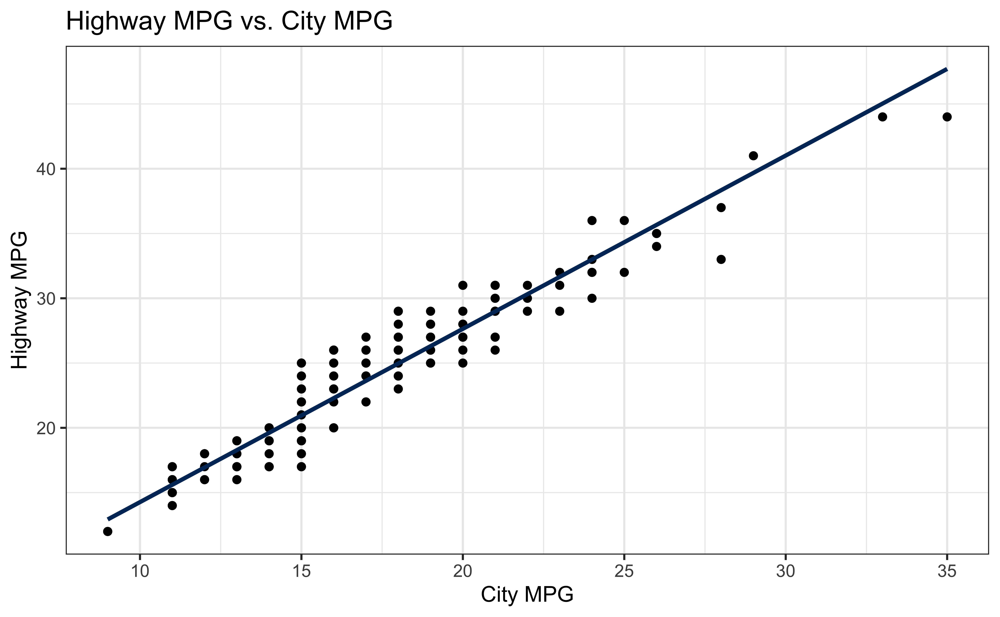

Linear Regression
MATH/COSC 3570 Introduction to Data Science
Simple Linear Regression
\[\begin{align*} y_i &= f(x_i) + \epsilon_i \\ &= \beta_0 + \beta_1~x_{i} + \epsilon_i, \quad i = 1, 2, \dots, n \end{align*}\]
- \(\beta_0\) and \(\beta_1\) are unknown parameters to be learned or estimated.

What are the assumption on \(\epsilon_i\)?
\(\epsilon_i \sim N(0, \sigma^2)\) and hence \(y_i \mid x_i \sim N(\beta_0+\beta_1x_i, \sigma^2)\) or \(\mu_{y\mid x_i} = \beta_0+\beta_1x_i\).
Simple Linear Regression Assumptions

Visualizing Residuals

Visualizing Residuals (cont.)

Visualizing Residuals (cont.)

Predict Highway MPG hwy from Displacement displ
\[\widehat{hwy}_{i} = b_0 + b_1 \times displ_{i}\]


Tidymodels
Step 1: Specify Model: linear_reg()
Linear Regression Model Specification (regression)
Computational engine: lm parsnip package provides a tidy, unified interface for fitting models

Quantify Uncertainty about Mean of \(y\)
- Uncertainty about the mean value of \(y\) given \(X = x\) \[\mu_{Y \mid X = x} = \beta_0 + \beta_1x\]

Quantify Uncertainty about Individual \(y\)
- Uncertainty about the individual value of \(y\) given \(X = x\), \(Y \mid X = x\)

Graphical Diagnostics: Residual Plot
- Residuals distributed randomly around 0.
- Check it by plotting residuals against the fitted value of \(y\): \(e_i\) vs. \(\hat{y}_i\)
- With no visible pattern along the x or y axis.

Not looking for…
Fan shapes

Not looking for…
Groups of patterns

Not looking for…
Residuals correlated with predicted values

Not looking for…
Any patterns!

MPG Data Residuals